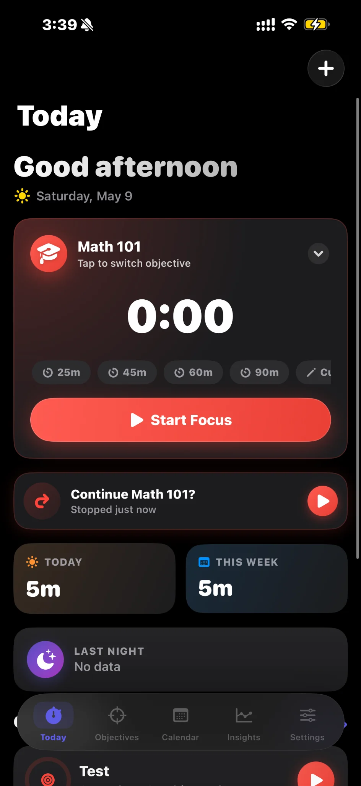

Choose an objective
Pick the work, class, habit, or routine that should receive credit before the timer starts.
Focus tracking for real schedules
Nycto connects timers, planned calendar blocks, and objective history into one calm record of your day. Start a session, switch goals, and see what actually moved forward.

The loop
Pick the work, class, habit, or routine that should receive credit before the timer starts.
Use quick presets, start focused blocks, or log time manually when real life interrupts.
See planned versus tracked time, objective share, streaks, and recent sessions in one place.
Designed from the app outward
The visual system pulls from the product: matte black surfaces, coral action states, violet selection, cyan timing details, amber streaks, and disciplined spacing.
Every tracked block can point to an objective, so your history is easier to trust at the end of the week.
Planned and tracked time live together, so a day can be reviewed without guessing what happened.
Dashboard cards prioritize the totals that decide your next move: today, this week, streaks, and objective share.
Not every session starts perfectly. Nycto keeps manual logs visible beside timer sessions.
Product tour
Today
The Today screen keeps the current objective, timer presets, day totals, and recent session prompt in one focused surface.
Calm analytics
Nycto favors legible totals, objective breakdowns, and trend context over decorative charts. The result feels close to the mobile app: compact, opinionated, and fast to scan.
Plain-language privacy
Nycto is built around personal routines, objectives, sleep context, location labels, and focus history. The privacy page explains what may be stored, how it is used, and what choices users have.
Ready for launch
This static site is ready for GitHub Pages, Netlify, Vercel, or any standard host. Swap the product link when the App Store page is available.